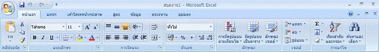
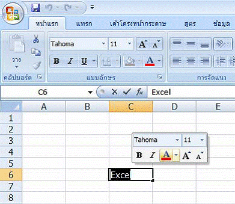

ความรู้เบื้องต้นในการใช้โปรแกรม Excel
โปรแกรม Excel เป็นโปรแกรมที่อำนวยความสะดวกในการทำงานเกี่ยวกับการพิมพ์ งานตาราง การคำนวณข้อมูล และฐานข้อมูล Excel 2007 มีส่วนติดต่อผู้ใช้โฉมใหม่ มีแม่แบบใหม่ แถบเครื่องมือต่าง ๆ และมีคุณลักษณะใหม่ที่สามารถสร้างประสิทธิผลงานได้อย่างรวดเร็ว Excel 2007 ทำให้เราสามารถเริ่มใช้งานส่วนติดต่อผู้ใช้โฉมใหม่ แม่แบบใหม่ และ คุณลักษณะใหม่ที่สามารถสร้างประสิทธิผลได้อย่างรวดเร็ว
1. ความรู้พื้นฐานเกี่ยวกับโปรแกรมตารางงาน (Microsoft Excel)
1.1 ลักษณะทั่วไปของโปรแกรม Excel
โปรแกรมตารางงาน หรือโปรแกรมสเปรดชีต (Spread Sheet) หรือตารางคำนวณ อิเล็กทรอนิกส์ เป็นโปรแกรมที่อำนวยความสะดวกในการทำงานเกี่ยวกับการคำนวณข้อมูล แสดง ข้อมูลในลักษณะเป็นคอลัมน์ หรือเป็นช่องตาราง ซึ่งเราสามารถบันทึกข้อมูลต่าง ๆ โดยส่วนมาก มักจะเป็นตัวเลขลงในตารางสี่เหลี่ยมที่แบ่งออกเป็นช่องเล็ก ๆ มากมาย เรียกว่า เซลล์ (Cell) พร้อม ทั้งสามารถใส่สูตรลงในเซลล์บางเซลล์เพื่อให้โปรแกรมทำการคำนวณหาผลลัพธ์จากข้อมูลที่โปรแกรม Excel ช่วยให้เราคำนวณตัวเลขในตารางได้ง่าย ๆ ตั้งแต่คณิตศาสตร์ขั้น พื้นฐานไปจนถึงสูตรทางการเงินที่ซับซ้อน และเรายังสามารถใช้ Excel ในการจัดกลุ่มข้อมูล วิเคราะห์ข้อมูล สร้างรายงาน และสร้างแผนภูมิได้อีกด้วยโปรแกรม Excel มีประโยชน์กับผู้คนแทบทุกสาขาอาชีพ ไม่ว่าจะเป็นบัญชี ซึ่ง สามารถนำ Excel มาช่วยคำนวณรายรับรายจ่ายและงบการเงินได้ นักวิเคราะห์การตลาด ที่จะนำ Excel มาช่วยในการสรุปข้อมูลแบบสอบถามจำนวนมาก ๆ วิศวกรที่สามารถนำข้อมูลจากการ ทดลองมาให้ Excel สร้างเป็นแผนภูมิลงในรายงานของตนเองได้ง่าย ๆ นักวางแผนสามารถทดลอง ได้ว่าจะเกิดเหตุการณ์อะไรถ้าตัวแปรบางตัวเปลี่ยนไป แม้กระทั่งครูอาจารย์ก็ยังสามารถคำนวณ เกรดของนักศึกษาได้ด้วย และนอกจากที่กล่าวแล้ว Excel ก็ยังสามารถประยุกต์ใช้กับงานอื่น ๆ ได้ อีกมากมาย
1.2 คุณสมบัติของโปรแกรม Excel
โปรแกรม Excel มีคุณสมบัติ ดังต่อไปนี้
1.สร้างและแสดงรายงานของข้อมูล ตัวอักษร และตัวเลข โดยมีความสามารถในการ
จัดรูปแบบให้สวยงามน่าอ่าน เช่น การกำหนดสีพื้น การใส่แรเงา การกำหนดลักษณะและสีของเส้นตาราง การจัดวางตำแหน่งของตัวอักษร การกำหนดรูปแบบและสีตัวอักษร เป็นต้น
2.อำนวยความสะดวกในด้านการคำนวณต่าง ๆ เช่น การบวก ลบ คูณ หารตัวเลขและยังมีฟังก์ชั่นที่ใช้ในการคำนวณอีกมากมาย เข่น การหาผลรวมของตัวเลขจำนวนมาก การหาค่าทางสถิติและการเงิน การหาผลลัพธ์ของโจทย์ทางคณิตศาสตร์ เป็นต้น
3.สร้างแผนภูมิ (Chart) ในรูปแบบต่าง ๆ เพื่อใช้ในการแสดงและการเปรียบเทียบข้อมูลได้หลายรูปแบบ เช่น แผนภูมิคอลัมน์ (Column Chart หรือBar Chart) แผนภูมิเส้น (LineChart) แผนภูมิวงกลม (Pie Chart) ฯลฯ
4.มีระบบขอความช่วยเหลือ (Help) ที่จะคอยช่วยให้คำแนะนำ ช่วยให้ผู้ใช้สามารถทำงานได้อย่างสะดวกและรวดเร็ว เช่น หากเกิดปัญหาเกี่ยวกับการใช้งานโปรแกรม หรือสงสัยเกี่ยวกับวิธีการใช้งาน แทนที่จะต้องเปิดหาในหนังสือคู่มือการใช้งานของโปรแกรม ก็สามารถขอความช่วยเหลือจากโปรแกรมได้ทันที
5.มีความสามารถในการค้นหาและแทนที่ข้อมูล โดยโปรแกรมจะต้องมีความสามารถในการค้นหาและแทนที่ข้อมูล เพื่อทำการแก้ไขหรือทำการแทนที่ข้อมูลได้สะดวกและรวดเร็ว
6. มีความสามารถในการจัดเรียงลำดับข้อมูล โดยเรียงแบบตามลำดับ จาก A ไป Z หรือจาก 1 ไป 100 และเรียงย้อนกลับจาก Z ไปหา A หรือจาก 100 ไปหา 1
7. มีความสามารถในการจัดการข้อมูลและฐานข้อมูล ซึ่งเป็นกลุ่มของข้อมูลข่าวสาร ที่ถูกรวบรวมเข้าไว้ด้วยกันในตารางที่อยู่ใน Worksheet ลักษณะของการเก็บข้อมูลเพื่อใช้เป็น ฐานข้อมูลมนโปรแกรมตารางงานจะเก็บข้อมูลในรูปแบบของตาราง โดยแต่ละแถวของรายการจะ เป็นระเบียนหรือเรคอร์ด (Record) และคอลัมน์จะเป็นฟิลด์ (Field)
2. ส่วนติดต่อผู้ใช้ที่ปรับปรุงใหม่ของ Excel 2007Excel 2007 ใช้ส่วนติดต่อผู้ใช้ที่ออกแบบมาใหม่ เพื่อช่วยให้สามารถทำงานได้เร็วขึ้น มี ประสิทธิผลมากขึ้น สามารถเรียนรู้ได้เร็วขึ้นและค้นหาได้เร็วขึ้น ส่วนติดต่อใหม่นี้ ได้แก่ แม่แบบ ใหม่ ใช้เริ่มต้นทำงานอย่างรวดเร็ว และการใช้พื้นที่มาตรฐานซึ่งเรียกว่า Ribbon แทนเลเยอร์ (Layers) ของเมนูและแถบเครื่องมือที่พบในรุ่นก่อนหน้านี้ ทำให้สามารถหากลุ่มของคำสั่งที่ เกี่ยวข้องกันได้เร็วขึ้น เนื่องจากแท็บที่ใช้ในนั้น จะวางคำสั่งต่าง ๆ ไว้ในส่วนหน้าโดยที่ไม่ได้เรียง ซ้อนลงในเมนูเหมือนก่อน ทำให้ไม่ต้องเสียเวลาค้นหา และสามารถจดจำตำแหน่งคำสั่งได้ดีขึ้น
องค์ประกอบที่สำคัญของส่วนติดต่อใหม่ใน Excel 2007 ประกอบด้วย
2.1 แม่แบบใหม่
แม่แบบใหม่จากเมนูเริ่ม (Start) สร้างเอกสาร Microsoft Office จะเปิดหน้าต่าง แม่แบบใหม่ หรือใช้แม่แบบ Microsoft Office Online จากปุ่ม Office ที่รายการสร้าง แล้วไปที่ ติดตั้ง แม่แบบของฉัน แม่แบบ Microsoft Office Online ซึ่งมีหัวข้อต่าง ๆ ได้แก่ เด่น งบประมาณ ปฏิทิน รายงานค่าใช้จ่าย ใบแจ้งหนี้ รายการ แผน แพลนเนอร์ กำหนดการ ประกาศ สเตชันเนอรี ใบ บันทึกเวลา ฯลฯ หรือจะไปที่เว็บไซต์ของ Microsoft Office แล้วดาวน์โหลดมาเก็บไว้ในเครื่องก็ได้แม่แบบแต่ละแบบ ได้ถูกออกแบบให้สามารถใช้งานได้ทันทีที่เลือก เพื่อให้สามารถ เริ่มต้นและทำงานได้อย่างรวดเร็ว ถ้าการออกแบบแม่แบบนั้นตรงกับความต้องการของผู้ใช้ หรือจะ นำมาปรับปรุงประยุกต์ใช้ให้ตรงกับความต้องการที่เฉพาะเจาะจงของผู้ใช้ก็ได้
ปุ่ม Office
ปุ่ม Office คือ ปุ่มที่ใช้ควบคุมคำสั่งหลักเกี่ยวกับการสร้างแฟ้ม การเปิดแฟ้ม การ บันทึก การบันทึกเป็น การพิมพ์ การส่ง การจัดเตรียม การประกาศ การปิด เอกสารล่าสุด และ ตัวเลือกของ Excel

Ribbon
Ribbon คือ แถบเครื่องมือชุดคำสั่งที่แบ่งเป็นแท็บ ๆ อยู่ส่วนบนของหน้าต่าง รองจากแถบชื่อ (Title bar) ซึ่งมาแทนแถบเมนูในโปรแกรมเก่า

แท็บคำสั่ง
แท็บคำสั่ง คำสั่งต่าง ๆ จะแสดงและรวมอยู่ด้วยกัน เพื่อให้สามารถหาปุ่มคำสั่ง ที่ต้องการใช้ได้ตามต้องการ เริ่มต้นมีอยู่ 7 แท็บ คือ หน้าแรก แทรก เค้าโครงหน้ากระดาษ สูตร ข้อมูล ตรวจทาน และมุมมอง ที่แท็บชุดคำสั่งใด ๆ มีจุดมุมทางด้านล่างขวามือ จะเป็นที่เปิดกล่อง โต้ตอบของชุดคำสั่งนั้น ๆ

แท็บคำสั่งตามบริบท
แท็บคำสั่งตามบริบท เป็นแท็บคำสั่งที่จะปรากฏตามบริบทของงาน คือวัตถุที่ กำลังทำงานด้วยหรืองานที่กำลังทำอยู่ แท็บนี้จะมีสีสันและมีคำสั่งที่เหมาะสำหรับนำไปใช้กับสิ่งที่ เรากำลังทำงานอยู่มากที่สุด

แถบเครื่องมือด่วน
แถบเครื่องมือด่วน เป็นแถบเครื่องมือมาตรฐานเดียวที่ปรากฏใน Ribbon เพื่อให้เข้าถึงคำสั่งที่จำเป็นมากที่สุดอย่างทันใจในคลิกเดียว เช่น บันทึก เลิกทำ ฯลฯ โดยสามารถ เพิ่มเติมคำสั่งได้ จากรายการคำสั่งเพิ่มเติม... และการเพิ่มโดยคลิกขวาที่ปุ่มคำสั่งของ Ribbon

แกลเลอรี
แกลเลอรี เป็นตัวควบคุมใหม่ที่จะแสดงตัวเลือกแบบเห็นภาพ เพื่อให้เรา สามารถเห็นผลลัพธ์ที่เราจะได้รับ แกลเลอรีจะถูกใช้ทั่วไปในส่วนติดต่อของ 2007 Microsoft Office system แกลเลอรีทำให้เราสามารถเลือกผลลัพธ์ได้โดยไม่ต้องกังวลว่าจะต้องทำอย่างไรถึง จะได้ผลลัพธ์นั้น

แถบเครื่องมือขนาดเล็ก
แถบเครื่องมือขนาดเล็ก มีองค์ประกอบคล้ายกับแถบเครื่องมือ โดยจะปรากฏ เป็นแบบโปร่งใสอยู่เหนือข้อความที่เราเลือก เมื่อเลื่อนเมาส์ไปที่แถบเครื่องมือ จะแสดงให้เห็นชัด ขึ้น เพื่อให้เราสามารถใช้การจัดรูปแบบได้อย่างง่ายดาย เช่น ตัวหนาหรือตัวเอียง หรือเปลี่ยนแบบอักษร
 |